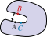
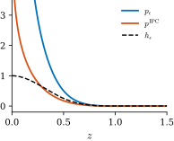
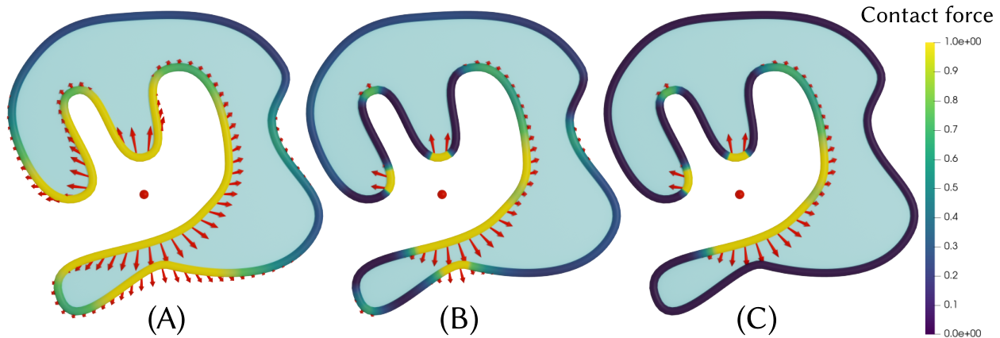
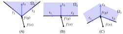
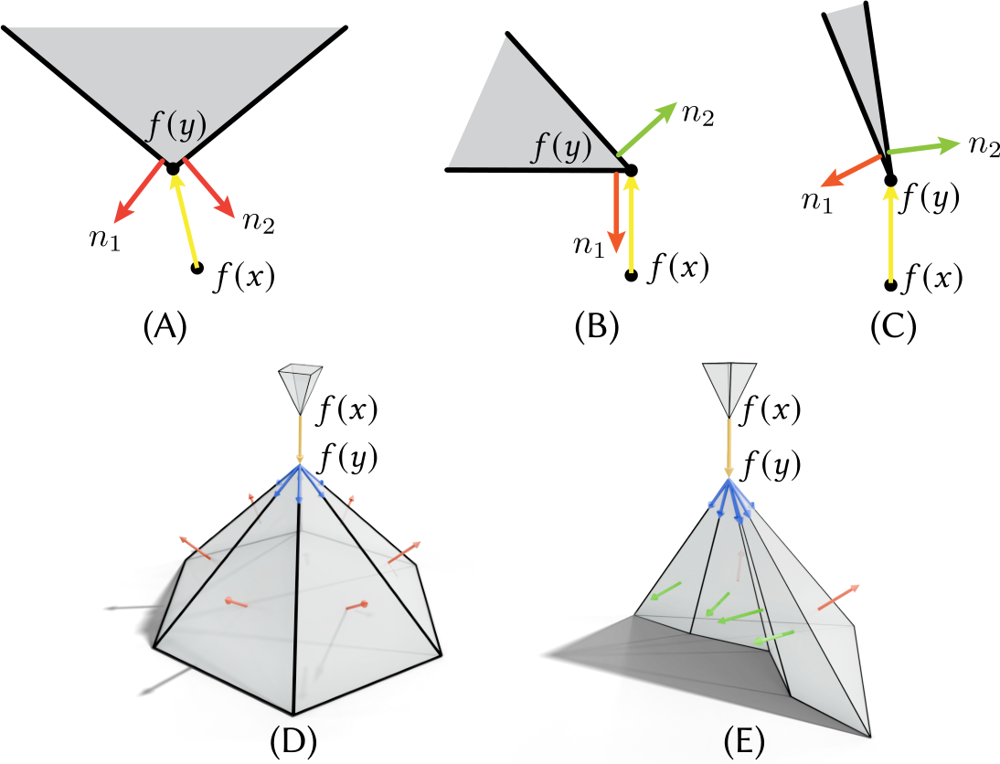
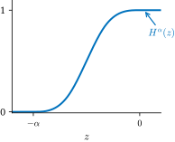
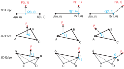

Geometric Contact Potential¶
In addition to the original implementation of Li et al. [2020], we also implement the Geometric Contact Potential (GCP) from Huang et al. [2025].
Motivation¶
A representative frictionless contact problem can be viewed as a geometrically constrained optimization:
where \(u\) is a deformation and \(g\) measures the distance to contact. Barrier-based solvers replace this with an unconstrained problem:
where \(b(u)\) is a barrier potential that increases to infinity as the configuration approaches contact.
All existing contact barrier potentials are defined by aggregating repulsion terms between pairs of points or elements. The key question is how to choose the strength of repulsion so that it is high when two points are close to contact, vanishes when they are far, and satisfies a number of desirable properties. In particular, one important difficulty is distinguishing true contact — arising from different objects or parts of the same surface moving toward each other — from points that remain close simply because they are neighbors on the undeformed rest shape.
{kind=link}

Contact potentials must distinguish points nearing contact (A and B) from nearby non-contacting points (A and C).¶
The IPC barrier potential [Li et al., 2020] uses a purely distance-based criterion, which can produce spurious repulsive forces between nearby surface points that are not actually in contact. This is especially problematic when the barrier activation distance \(\hat{d}\) is relatively large compared to mesh features. GCP addresses this by introducing geometric criteria — the local minimum constraint and the exterior direction constraint — that identify true contact candidates, eliminating spurious forces and decoupling \(\hat{d}\) from the discretization.
Requirements¶
GCP is designed to satisfy the following requirements simultaneously. No prior potential in the literature satisfies all of them:
Finiteness: The total contact potential integral is finite for any piecewise-smooth surface not in contact.
Barrier: The potential grows to infinity as the distance to contact approaches zero, guaranteeing that all configurations remain contact-free (when combined with CCD).
No spurious forces: In the undeformed (rest) configuration, both the potential and its gradient are zero, so no artificial forces arise.
Localization: The potential has a locality parameter \(\hat{d}\) and vanishes if the distance to contact exceeds \(\hat{d}\).
Differentiability: The potential depends differentiably (and piecewise twice differentiably) on mesh vertex positions, enabling second-order solvers.
Discretization: The discrete version of the potential satisfies all of the above requirements exactly, not just in the limit of refinement.
Formulation¶
The GCP pointwise potential takes the general form:
where \(f\) is the deformation map, \(p_{\epsilon}\) is a barrier function that diverges as its argument approaches zero and vanishes for distances exceeding \(\epsilon(x)\), and \(\gamma(x, y)\) is a directional factor that restricts the potential to a geometrically meaningful interaction set \(C(x, f)\).
The total potential is obtained by integrating (or in the discrete case, summing) over all pairs of surface points.
The formulation involves four main components:
Interaction sets \(C(x, f)\): the set of points that are close to being in true contact with \(x\).
Adaptive locality \(\epsilon(x)\): a per-point barrier extent.
Barrier function \(p_\epsilon\): the distance-based barrier.
Directional factor \(\gamma(x, y)\): a smooth factor supported on \(C(x, f)\).
Barrier Function¶
The barrier function is:
where \(r = n - 1\) (\(n \in \{2, 3\}\) is the dimension of the scene), and \(h_\epsilon(z) := \tfrac{3}{2} B^3(2z/\epsilon)\) is a cubic \(C^2\) spline with support \(|z| \leq \epsilon\). Here \(B^3\) is the cubic B-spline basis function:
Because \(h_\epsilon\) vanishes for \(z \geq \epsilon\) and \(z^{-r}\) diverges as \(z \to 0\), the barrier satisfies both the localization and barrier requirements.
{kind=link}

The cubic spline \(h_\epsilon(z)\) (dashed) and the GCP barrier \(p_\epsilon(z) = h_\epsilon(z)/z^{n-1}\) (blue) for \(\epsilon = 1\). The IPC log barrier \(p^{\text{IPC}}\) (orange) is shown for comparison.¶
Interaction Sets¶
The key insight of GCP is defining interaction sets based on a geometric characterization of contact: points that are close to being local minima of the distance function and for which the displacement vector points toward the surface exterior.
For smooth surfaces, two points \(x\) and \(y\) on the boundary are in contact if (a) they coincide in space, \(f(x) = f(y)\), and (b) their normals have opposite orientation, \(n(x) = -n(y)\). The interaction set captures points close to satisfying both conditions, via two constraints:
Local minimum constraint. A point \(y\) is near a local minimum of the distance from \(f(x)\) if:
where \((\cdot)_+\) denotes normalization to a unit vector and \(0 < \alpha < 1\). This condition checks whether the distance direction is nearly aligned with the surface normal at \(y\) — equivalently, whether \(y\) is near a closest point on the surface to \(f(x)\).
Exterior direction constraint. The displacement vector \(f(y) - f(x)\) should point toward the surface exterior at \(y\) (i.e., \(f(x)\) is on the outward-normal side of \(f(y)\)):
This eliminates interactions between opposite sides of a thin volumetric shell.
The interaction set for smooth surfaces is then:
Note that both constraints are applied symmetrically: \(y\) must be near a local minimum as seen from \(x\), and \(x\) must be near a local minimum as seen from \(y\).
{kind=link}

Contact forces (arrows) and potential distribution on a 2D object surface with respect to the red dot. (A) The IPC potential distributes spherically regardless of surface shape. (B) With the local minimum constraint, only surfaces near local minima/maxima of distance have high potential. (C) With both local minimum and exterior direction constraints, only the closer side of the volumetric object has nonzero potential.¶
Piecewise Smooth Surfaces¶
Smooth surfaces are typically approximated by piecewise-linear meshes in practice. On piecewise-smooth surfaces (including triangle meshes), normals are not uniquely defined at edges and vertices, so the constraints must be generalized.
Local minimum constraint (generalized). For a point \(y\) on a piecewise-smooth surface, let \(I\) be the set of indices of patches containing \(y\). For each patch \(\partial\Omega_i\), define tangent vectors \(t^k_i(y)\) for \(k = 1, 2, 3\) (two edge tangents and their angle bisector, see figure below). The local minimum condition becomes:
where \(\alpha_t\) is the tangent-direction smoothing parameter.
{kind=link}

Tangent directions at a point \(f(y)\) on a face \(\partial\Omega_i\) in 3D. \(t_1\) and \(t_2\) are the two tangent vectors along the edge curves of the face at \(f(y)\), and \(t_3\) is their angle bisector. The face is viewed from the normal direction.¶
Exterior direction constraint (generalized). At an edge point, the constraint is evaluated by projecting onto the plane perpendicular to the edge and applying a 2D inside-cone test. At a vertex, where multiple face normals \(n_i(y)\) are available, a conservative smooth formulation is used. The per-face exterior constraint is:
and the mollified constraint ensures that \(\Phi^e_i(x, y) \geq 0\) for at least one incident face \(i\).
{kind=link}

2D (top) and 3D (bottom) normal directions for contact points. The displacement \(f(y) - f(x)\) is shown in yellow; face normals \(n_i(y)\) are shown in red when the exterior constraint is satisfied, and green otherwise. In simple cases such as (A) and (D), all normals satisfy the constraint, but in general only some do.¶
{kind=link}
3D (left) and 2D (right) views of the exterior direction test for an edge point. The 2D view is the projection onto the plane perpendicular to edge \(e_j\). Deciding if \(v\) points inside the cone in 3D reduces to checking if \(\tilde{v}\) is inside the sector bounded by \(\tilde{e}_1\) and \(\tilde{e}_2\) in 2D.¶
Contact between different element types. On piecewise-smooth surfaces, contact can occur between any pair of element types: Face–Face, Face–Edge, Face–Vertex, Edge–Edge, Edge–Vertex, and Vertex–Vertex. Since edge and vertex contact sets have zero measure, directly integrating the potential over the surface would yield zero. GCP addresses this by treating low-dimensional elements separately with an element-measure weighting parameter \(L\):
where \(g, h \in \{\text{Face}, \text{Edge}, \text{Vertex}\}\), and the integrals are area, line, or point evaluations depending on the element dimension.
Directional Factor \(\gamma\)¶
To keep the potential differentiable while restricting it to the interaction set, GCP uses smooth mollification. The directional factor is built from two components:
Local minimum factor (using the smoothed Heaviside function \(H^\alpha\)):
This equals 1 when all tangent-direction constraints are satisfied, and vanishes smoothly as any constraint is violated.
Exterior direction factor (for vertices with multiple normals):
which equals 1 when at least one face normal satisfies the exterior constraint, and vanishes when none do. For edge points, a simpler form using the 2D cone test is used.
The combined factor is:
The symmetry ensures that both points in a pair must satisfy the geometric criteria.
Smooth Heaviside Function¶
{kind=link}

The smooth Heaviside function \(H^\alpha(z)\) with \(\alpha = \tfrac{1}{2}\).¶
The smooth Heaviside function \(H(z; \alpha, \beta) \in C^1(\mathbb{R})\) used throughout the construction satisfies:
The parameters \(\alpha\) and \(\beta\) control the transition region. Since the inputs to \(H\) are dot and cross products of unit vectors, we have \(-1 \leq z \leq 1\), and the basic requirement is:
Adaptive Barrier Localization¶
To satisfy the no spurious forces requirement, the per-point barrier extent \(\epsilon(x)\) is set adaptively:
where \(d_c(x, f_0)\) is the distance to the interaction set in the rest configuration and \(\hat{d}\) is the global maximum activation distance. This ensures that the potential is exactly zero in the rest pose, eliminating spurious forces by construction.
Discretization¶
For the barrier property to hold exactly in the discrete setting, GCP uses closest points on element pairs as quadrature points (rather than standard quadrature). This may reduce integration precision, but guarantees the barrier property at the discrete level. The discrete potential is:
where \((x_i, y_j)\) is a pair of closest points on elements \(G_i\) and \(H_j\), and \(A(\cdot)\) denotes the element measure (area for faces, length for edges, 1 for vertices).
Distance Mollification¶
Since closest points may not depend smoothly on vertex positions (e.g., when a closest point moves from the interior of a face to its boundary), GCP introduces mollification factors \(M(x, y)\) that smoothly vanish near these non-smooth transitions.
{kind=link}

Non-smoothness of the closest point position. As the query point \(P\) moves, the closest point \(Q\) on an edge or face transitions from the interior to the boundary. The coordinate of \(Q\) does not depend smoothly on \(P\) at the boundary, motivating the mollification.¶
For Edge–Vertex contact with \(Q\) on edge \(AB\):
which vanishes as the closest point approaches either endpoint of the edge.
For Face–Vertex contact with face \(ABC\):
which vanishes as the closest point approaches the boundary of the triangle.
For Edge–Edge contact between edges \(AB\) and \(CD\):
Here \(h_c(s) = h((s-1)/c)\) with \(h(z) = z(2-z)\) for \(0 \leq z < 1\) and \(h(z) = 1\) for \(z \geq 1\). These mollifications are \(C^1\) smooth and ensure that when one contact type vanishes due to mollification, another contact type becomes active, preserving the barrier property.
Usage¶
GCP is implemented as separate collision and potential classes. A basic example of computing the GCP potential is as follows.
#include <ipc/ipc.hpp>
// Set up parameters
double dhat = 1e-3; // barrier activation distance
double alpha_t = 0.5; // local minimum constraint support
double beta_t = 0.0; // local minimum constraint offset
double alpha_n = 0.1; // exterior direction constraint support
double beta_n = 0.0; // exterior direction constraint offset
int r = 2; // barrier exponent (dimension - 1)
ipc::SmoothContactParameters params(dhat, alpha_t, beta_t, alpha_n, beta_n, r);
// Build collision set
bool use_adaptive_dhat = true;
ipc::SmoothCollisions collisions;
if (use_adaptive_dhat)
collisions.compute_adaptive_dhat(collision_mesh, vertices, params);
collisions.build(collision_mesh, vertices, params, use_adaptive_dhat);
// Compute potential
ipc::SmoothContactPotential barrier_potential(params);
double b = barrier_potential(collisions, collision_mesh, vertices);
// Compute gradient
Eigen::VectorXd grad = barrier_potential.gradient(collisions, collision_mesh, vertices);
// Compute Hessian
Eigen::SparseMatrix<double> hess = barrier_potential.hessian(
collisions, collision_mesh, vertices);
import ipctk
# Set up parameters
dhat = 1e-3 # barrier activation distance
alpha_t = 0.5 # local minimum constraint support
beta_t = 0.0 # local minimum constraint offset
alpha_n = 0.1 # exterior direction constraint support
beta_n = 0.0 # exterior direction constraint offset
r = 2 # barrier exponent (dimension - 1)
params = ipctk.SmoothContactParameters(dhat, alpha_t, beta_t, alpha_n, beta_n, r)
# Build collision set
use_adaptive_dhat = True
collisions = ipctk.SmoothCollisions()
if use_adaptive_dhat:
collisions.compute_adaptive_dhat(collision_mesh, vertices, params)
collisions.build(collision_mesh, vertices, params, use_adaptive_dhat)
# Compute potential
barrier_potential = ipctk.SmoothContactPotential(params)
b = barrier_potential(collisions, collision_mesh, vertices)
# Compute gradient
grad = barrier_potential.gradient(collisions, collision_mesh, vertices)
# Compute Hessian
hess = barrier_potential.hessian(collisions, collision_mesh, vertices)
Important
If use_adaptive_dhat is true, make sure to call SmoothCollisions::compute_adaptive_dhat() before SmoothCollisions::build(). Adaptive \(\hat{d}\) computes per-element barrier extents based on the rest configuration to guarantee zero potential (and zero forces) in the undeformed state.
Note
Unlike NormalCollisions in IPC, SmoothCollisions must be rebuilt whenever vertex positions change, because the interaction set depends on the current geometry (normals, tangents, and distances).
Parameter Choices¶
The SmoothContactParameters structure contains the following parameters:
Parameter |
Description |
|---|---|
|
Global maximum barrier activation distance. The potential vanishes for distances exceeding \(\hat{d}\). Unlike IPC, this can be chosen independently of the mesh resolution. |
|
Controls the support of the smooth Heaviside for the local minimum constraint. Larger values include more points in the interaction set and produce smoother potentials; smaller values are more selective but less smooth. |
|
Controls the offset of the smooth Heaviside for the local minimum constraint. |
|
Controls the support of the smooth Heaviside for the exterior direction constraint. |
|
Controls the offset of the smooth Heaviside for the exterior direction constraint. |
|
The barrier exponent. Should be \(n - 1\) where \(n\) is the scene dimension (so \(r = 1\) for 2D and \(r = 2\) for 3D). |
The \(\alpha\) and \(\beta\) parameters for each constraint must satisfy:
As \(\alpha + \beta\) decreases, the support of the Heaviside function shrinks and the function becomes less smooth, making the potential harder to optimize.
Tip
For simplicity, we recommend setting \(\beta_n = \beta_t = 0\). The recommended parameter choices are \(\alpha_t \in [0.2, 0.9]\) and \(\alpha_n = 0.1\). The barrier property is satisfied for any \(\alpha > 0\), so the choice only affects smoothness and performance.
Additional internal parameters that may affect behavior:
Adaptive dhat ratio (default
0.5): Controls the ratio \(\epsilon(x) / d_c(x, f_0)\) in the adaptive barrier localization. Can be set viaSmoothContactParameters::set_adaptive_dhat_ratio().Element measure \(L\): For vertices, this is set to the average edge length around the vertex; for edges, to the edge length; for faces, \(L\) is not needed. This determines the strength of the potential for low-dimensional contact (edge–edge, edge–vertex, vertex–vertex).
Friction¶
We implement the original friction formulation of Li et al. [2020] following the same style as GCP. Details are covered in the paper Huang et al. [2025].
Comparison with IPC¶
The following summarizes the key differences between GCP and the original IPC barrier:
Property |
IPC |
GCP |
|---|---|---|
Distance criterion |
Pure Euclidean distance |
Distance + geometric interaction set |
Spurious forces at rest |
Can occur when \(\hat{d}\) is large |
Zero by construction (adaptive \(\epsilon\)) |
Thin shell handling |
May repel opposite sides |
Exterior direction constraint eliminates this |
\(\hat{d}\) dependence on mesh |
Must be small relative to mesh features |
Independent of discretization |
Smoothness |
\(C^2\) in distance |
\(C^1\) overall (piecewise \(C^2\)) |
Collision rebuild |
Not needed per step |
Required each time vertices change |